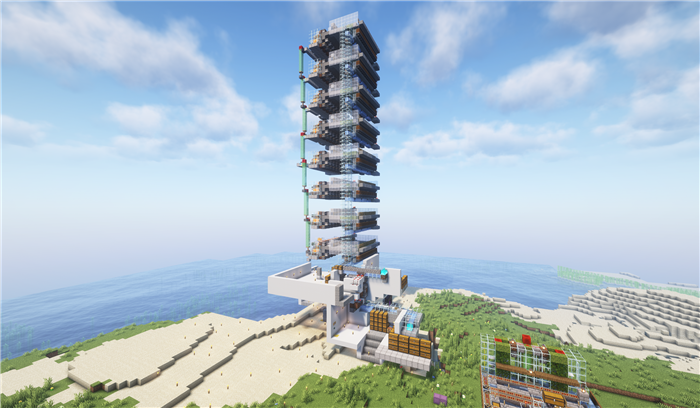
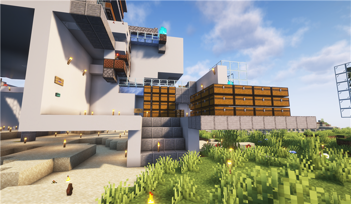
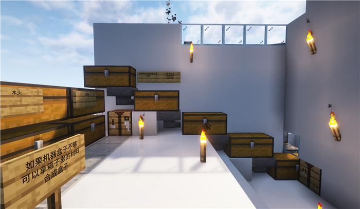

Loading header...
海莲八核骨粉机
海莲集团公开的骨粉机器，由qwq13514建造，以交易额50,000达成交易归属LinTsingShi。
机器清单

机器照片
是否公开
是
建造者
- qwq13514（机器核心）
- LinTsingShi（开关面板、外壳）
所有者
产物和每小时产量
| 产物 | 产量（每小时） |
|---|---|
| 骨粉 | 产量，例如：10k |
是否抗卸载
是
最少挂机人数
0
需要的mod
无
需要自带的原材料
维护人员
机器坐标
世界:Factory x:3741 y:82 z:3071
如何从工厂出生点前往？
工厂网络-海莲集团基础工厂
机器教程
不要触碰任何开关，包括操作面板。
一楼产物仓库直取盒装骨粉。

仓库，可以直接在这里拿取产物。
若要补充潜影盒，前往二楼。图示区域左侧提供合成原材料。

在这里放置空潜影盒或没有装满骨粉且只装了骨粉的潜影盒。
潜影盒添加处没有防护措施，请勿塞入异物。
目录